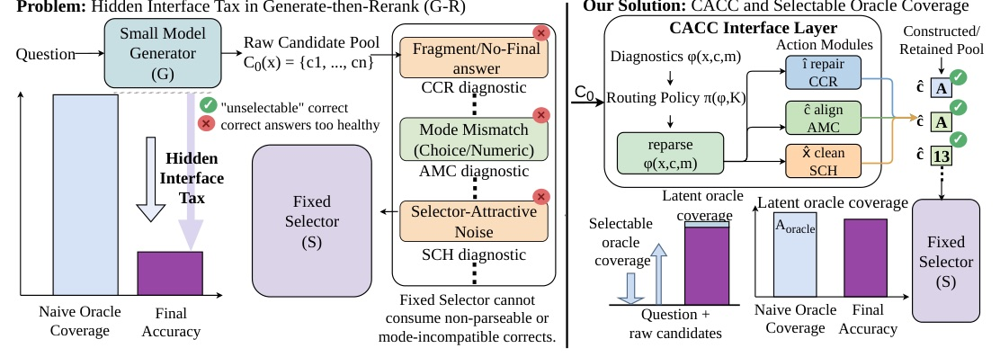
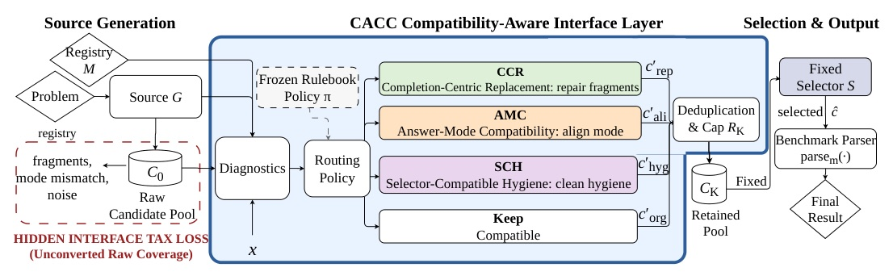
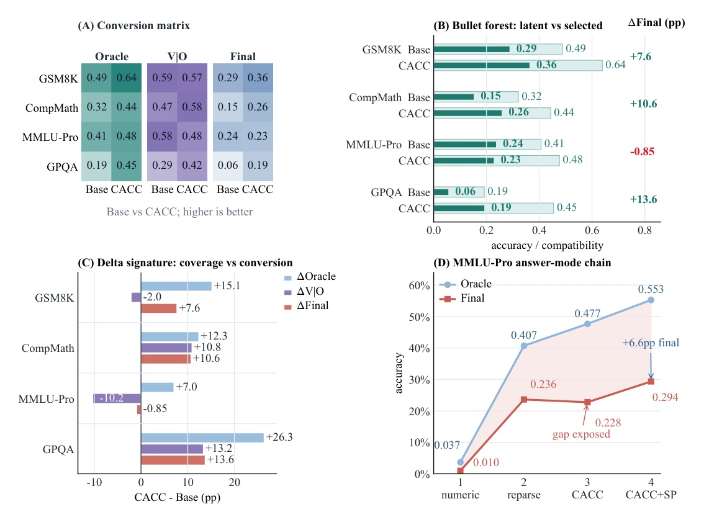

Multi-candidate reasoning has a third bottleneck: the interface between generation and selection.
A correct trace can already be in the pool — and still be unselectable.
COVERAGE FAILURE
CONVERSION FAILURE

Do not ask only “did a correct candidate appear?” Ask whether the fixed selector can consume it.
RAW ORACLE HIT
SELECTABLE ORACLE HIT

Offline attribution may use audited/dev labels; online inference never reads test gold labels.
HELD FIXED
EVALUATED REGIMES
CACC+SP uses a Qwen3-8B proposer and is explicitly a different compute regime.
| Dataset | Base final | CACC final | Delta |
|---|---|---|---|
| GSM8K | 0.2873 | 0.3632 | +7.59 pp |
| CompMath | 0.1519 | 0.2579 | +10.60 pp |
| MMLU-Pro | 0.2362 | 0.2277 | -0.85 pp |
| GPQA | 0.0556 | 0.1919 | +13.63 pp |

Increasing oracle coverage can lower final accuracy when it makes the selector less able to choose the correct candidate.
| MMLU-Pro transition | Oracle | V|O | Final |
|---|---|---|---|
| numeric scoring | 0.0369 | 0.2590 | 0.0096 |
| MCQ reparse | 0.4072 | 0.5800 | 0.2362 |
| Transition | Oracle | V|O | Final |
|---|---|---|---|
| Base | 0.4072 | 0.5800 | 0.2362 |
| CACC | 0.4767 | 0.4777 | 0.2277 |
| MMLU-512 transition | Oracle | V|O | Final |
|---|---|---|---|
| diverse -> CACC | +9.38 pp | -9.00 pp | -0.78 pp |
| CACC -> +hygiene | 0.00 pp | +4.58 pp | +2.54 pp |
| GPQA method | Oracle | V|O | Final |
|---|---|---|---|
| Base | 0.1919 | 0.2897 | 0.0556 |
| CACC | 0.4545 | 0.4222 | 0.1919 |
| CACC+SP* | 0.4899 | 0.5258 | 0.2576 |
* CACC+SP uses a Qwen3-8B proposer, so it is composition evidence rather than a matched CACC-only result.
A correct answer may appear in the candidate pool yet fail to be selected because it is incomplete, unparseable, or misaligned with the answer mode the fixed selector expects.
正確答案可能已出現在候選池，卻因不完整、不可解析，或與固定 selector 預期的答案格式不相容而未被選中。
Layer matching (not the number of stacked enhancements) is what predicts whether a given composition converts oracle expansion into final accuracy under a fixed selector.
決定 oracle 擴張能否變成最終準確率的，是介入層位是否匹配，而不是疊了多少強化模組。
Correct generation is necessary. Selectable generation is what the fixed selector can actually use.